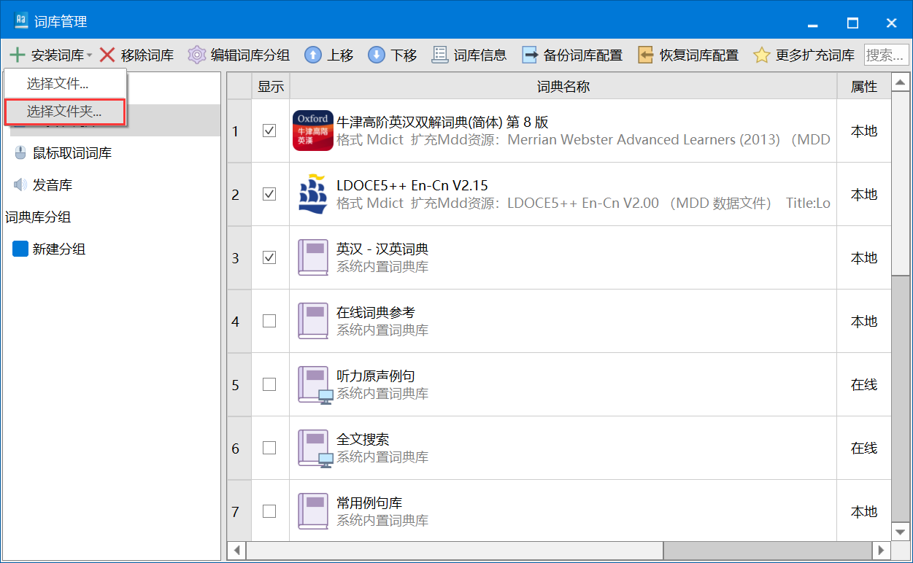
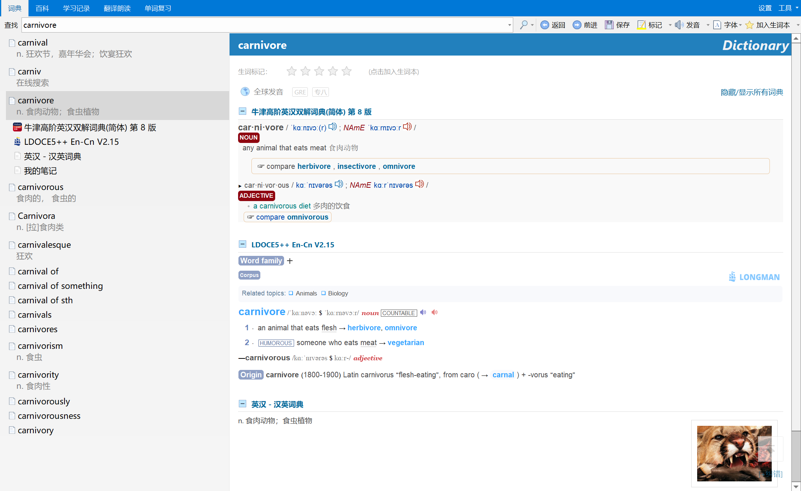
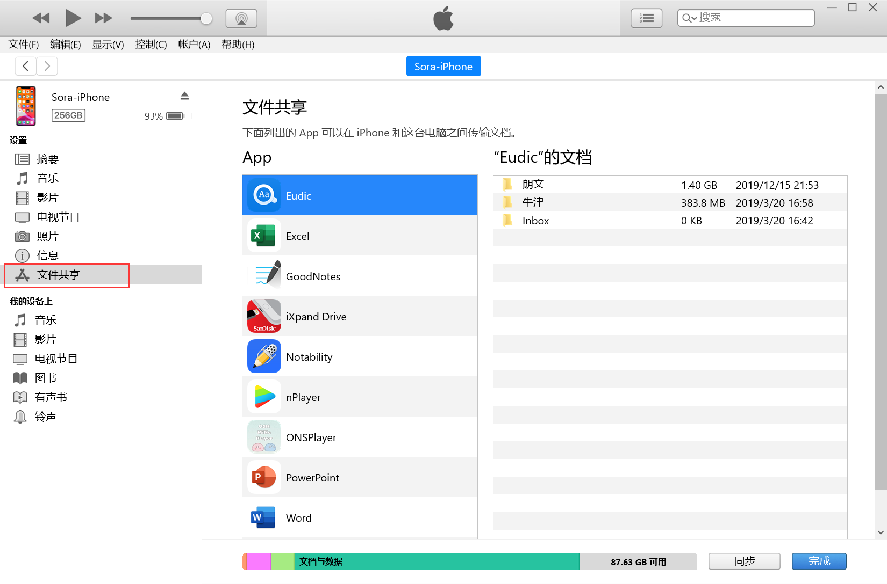

欧路词典
不知道准备英语考试的各位有没有这种烦恼，市面上常见的英语词典APP不仅花里胡哨广告多，而且词条解释也不算特别详细，一些偏门用法说不定还查不到，跟之前使用的实体词典相比效果还是要差很多的。
在网上一顿操作后，终于还是找到了一种比较好的解决办法，mdx格式的词典文件。
因此只需要找到一个能看mdx格式的词典APP就行了，也不局限于使用欧路词典。但是欧路词典跨平台性比较好，还能拿来背单词，所以就整这个。
不知道准备英语考试的各位有没有这种烦恼，市面上常见的英语词典APP不仅花里胡哨广告多，而且词条解释也不算特别详细，一些偏门用法说不定还查不到，跟之前使用的实体词典相比效果还是要差很多的。
在网上一顿操作后，终于还是找到了一种比较好的解决办法，mdx格式的词典文件。
因此只需要找到一个能看mdx格式的词典APP就行了，也不局限于使用欧路词典。但是欧路词典跨平台性比较好，还能拿来背单词，所以就整这个。
mdx格式的词典文件可以理解为词典的电子版本，网上不仅有着实体词典形式的mdx，甚至还有有道词典等在线词典的mdx文件。动手能力强的小伙伴也可以自己去找资源。我就只给出两个我自己常用的mdx
PS：朗文词典也是双语的，点一下每一条注释就能显示中文。排版好看，功能也比较多，相应的文件比较大（1.4G）
导入词典库：设置-词典库管理-选择文件夹
完成！就是这么简单。效果预览：
iOS上稍微麻烦的是怎么把下载好的词典文件夹通过iTunes导入到APP中,导入方法是通用的,会的小伙伴可以跳过这一节
打开iTunes的文件共享
把mdx文件夹拖进去
完成！也很简单(图1为iPhone，图2为iPad)
一个还算不错的日语词典，多平台支持（PC端为网页版），也没什么需要讲的地方。
反正可以白嫖，下载试试不喜欢再删也不迟。
评论区